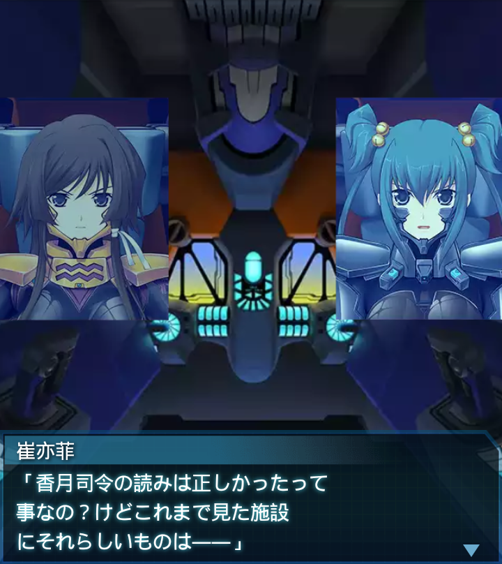
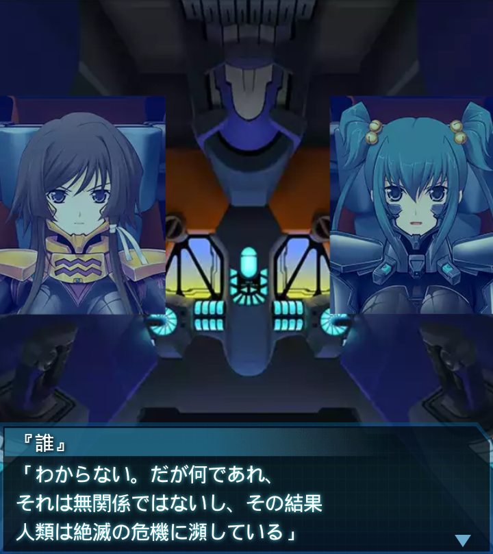

『誰』
「よし！施設の破壊完了！…篁中尉、気づいたか？」
篁唯依
「施設中央部の巨大な機械の事ですね？ＢＥＴＡの反応炉に似て
いました…」

崔亦菲
「香月司令の読みは正しかったって事なの？けどこれまで見た施設
にそれらしいものは――」
『誰』
「やはり小型故に見落としたという事だろう。これまでの施設にも
どこかにあったんだ」

『誰』
「人類が反応炉を造り上げた世界…。この世界よりも進んだ
ＢＥＴＡ研究…本当なのかよ」
崔亦菲
「ならその結果、一体何を得たのかしら？まさかそれが世界の融合
だなんて言わないわよね？」

『誰』
「わからない。だが何であれ、それは無関係ではないし、その結果
人類は絶滅の危機に瀕している」
『誰』
「世界の謎を解き明かす為には、もっと多くの情報が必要なのは
間違いないようだ」
篁唯依
「――『誰』大尉！海底の発信器がアフリカ喜望峰に
転進したとの連絡が入りました」
『誰』
「アフリカにハイヴか研究施設があるという事か…。豪州同様
アフリカも無事ではなかったな」
篁唯依
「もはや地球上に人類が無事に生きられる土地はないという事で
しょうか…」
『誰』
「篁中尉、希望は捨てるな。世界を元に戻せる事がわかった
んだ。戦い続けよう！」
『誰』
「恐らく俺達は、喜望峰に向かうよう指示される筈だ。準備を
整えておいてくれ」